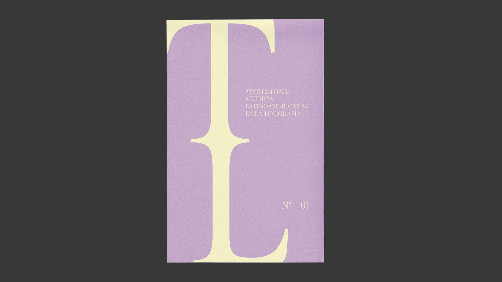
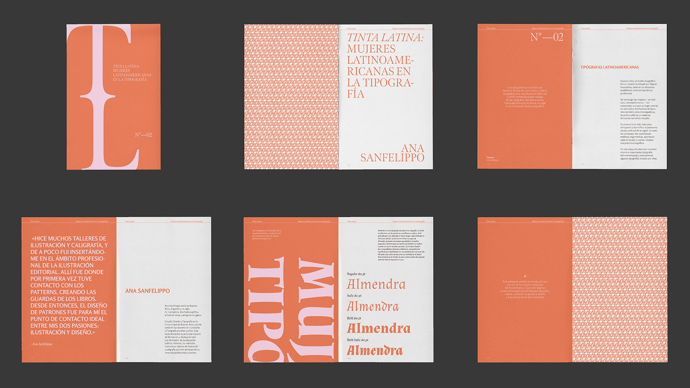
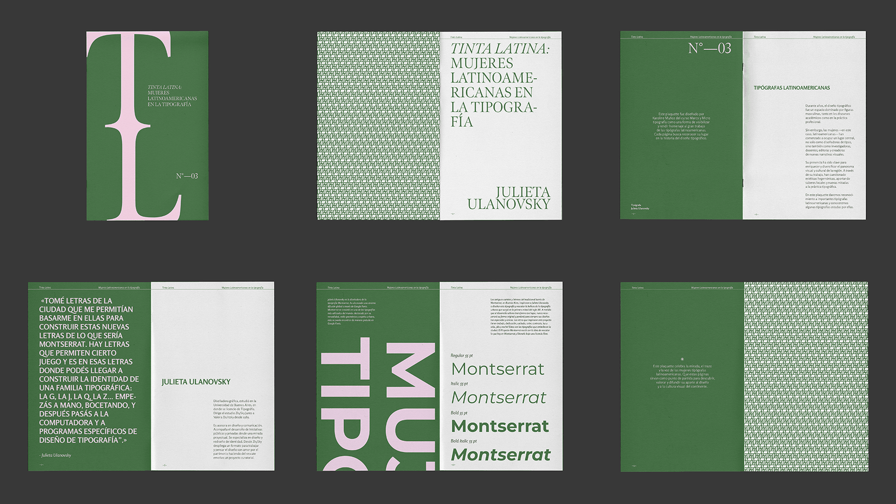

Plaquette: Tinta latina
Colección de plaquettes en formato A5 dedicada a visibilizar el trabajo de tipógrafas latinoamericanas. Hecho para Micro y macro tipografía. Cada edición combina contenido biográfico y espécimen tipográfico bajo un sistema editorial de alto contraste cromático, donde la experimentación compositiva y el rigor de lectura dialogan para poner en valor la escena tipográfica contemporánea de la región.